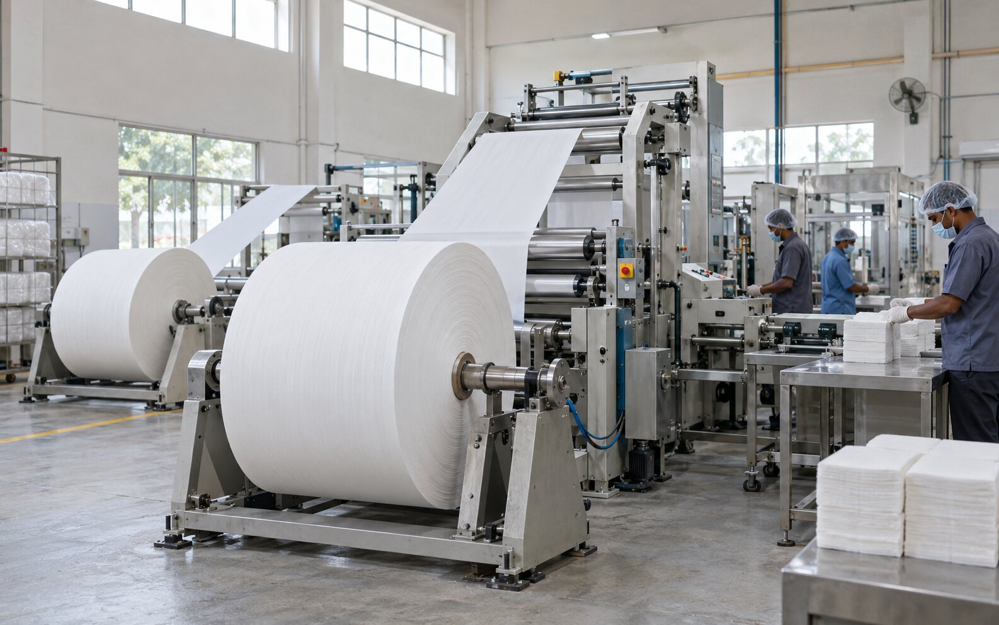
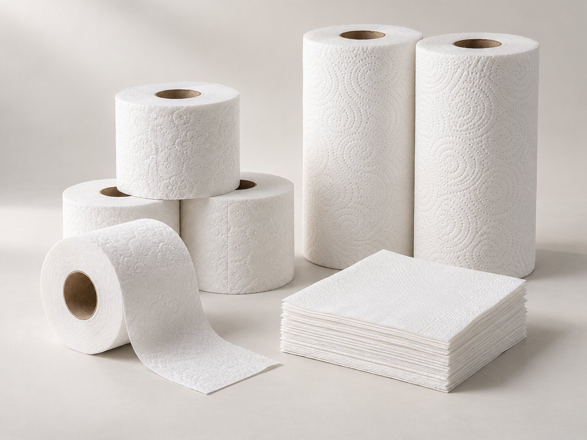
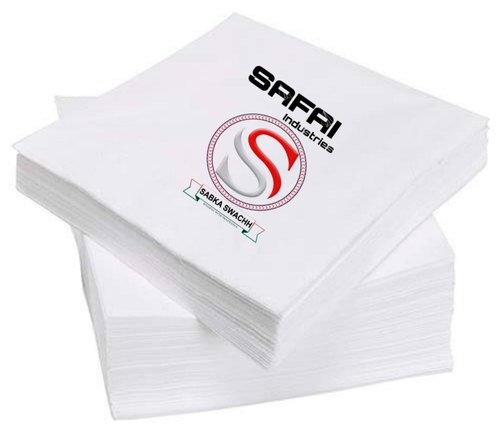

01
Tissue Napkins
Clean, convenient tissue napkins for restaurants, events, offices, institutions and everyday use.
Bulk supplyHospitalityEveryday use
Safai Industries manufactures tissue products for everyday hygiene and commercial use — with a focus on consistent conversion, clean presentation and dependable bulk supply.

What we make
From daily-use napkins to commercial rolls, our core product range is built for hospitality, institutions, distributors and other bulk buyers.

Clean, convenient tissue napkins for restaurants, events, offices, institutions and everyday use.
Paper hygiene rolls for commercial washrooms, hospitality, institutional procurement and distribution.
Absorbent paper rolls designed for kitchens, food service, housekeeping and everyday clean-up needs.
Manufacturing
Our production workflow turns jumbo tissue rolls into clean, consistent finished products, with careful attention to forming, finishing, packing and dispatch.
Jumbo roll handlingRaw tissue converted into finished formats.
Rewinding & formingConsistent roll and sheet conversion.
Embossing, cutting & foldingProduct-specific finishing stages.
Packing & dispatchPrepared for business and bulk distribution.

Brand identity
The recognizable red “S” and “Sabka Swachh” promise make the product easy to identify while keeping the presentation clean and straightforward.
About Safai
Based in Visakhapatnam, Andhra Pradesh, Safai Industries manufactures tissue paper products for hospitality, commercial, institutional and distribution needs.
Our focus is straightforward: dependable supply, consistent presentation and practical hygiene products that businesses can order with confidence.
Talk to the team ↗For distributors, businesses & institutions
Contact
Safai Industries is based in Auto Nagar, Visakhapatnam. Use the address below to locate the business.